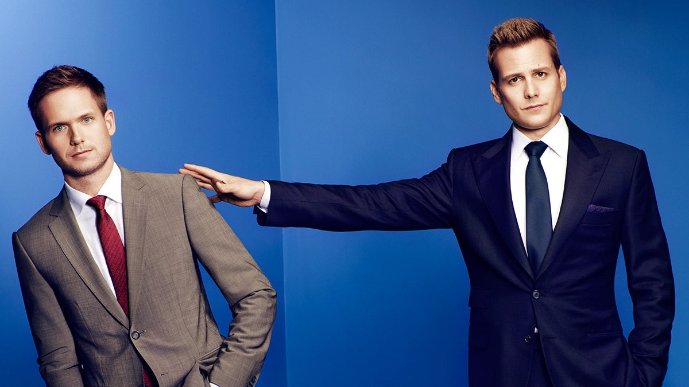
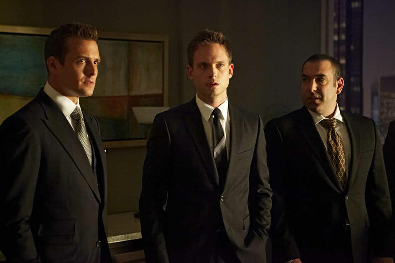
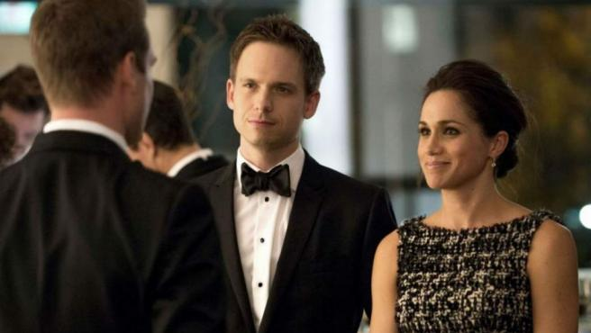
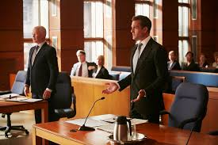
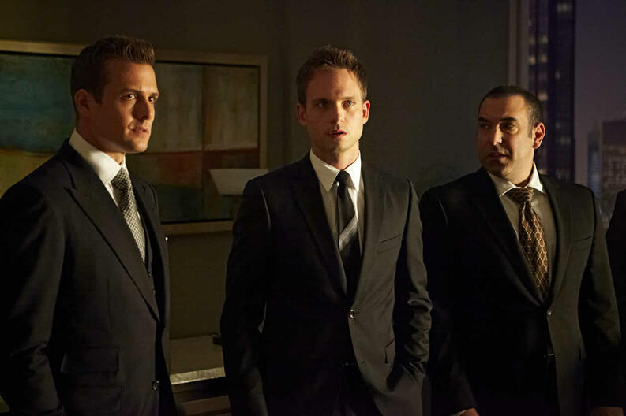
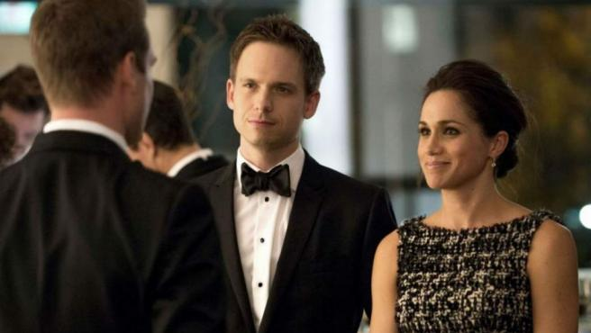
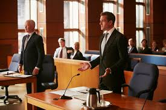

Mike Ross es un joven con una mente brillante que siempre ha soñado con ser abogado, pero un incidente desafortunado le impide cumplirlo. Naturalmente inteligente y con una memoria eidética, se gana la vida suplantando a otros en los exámenes de admisión para la escuela de derecho. Envuelto en un encargo de tráfico de drogas, Mike sospecha que le han tendido una trampa y consigue deshacerse de la policía al colarse en una entrevista de trabajo para uno de los bufetes más importantes de Nueva York (Pearson Hardman).
Harvey Specter es el mejor abogado de Manhattan. Brillante, calculador, elegante y atractivo, Harvey tiene fama de ganar todos sus casos, aunque a veces recurra a su propia interpretación de las reglas y recientemente ha sido promovido a socio mayoritario de su bufete, y tiene derecho, por la política de la empresa, a contratar a un asociado. A pesar de no ser licenciado y de presentarse en la entrevista con un maletín lleno de marihuana, Mike consigue impresionar a Harvey, demostrándole que posee un conocimiento enciclopédico del derecho.
A pesar de que por política de empresa solo se puede contratar a socios licenciados de Harvard, Harvey decide arriesgarse y ofrecerle el puesto a Mike. Ambos tendrán que ocultar este secreto al resto de los miembros del bufete, también a Jessica, la socia gerente de la a, y al encargado de los asociados, Louis Litt, el socio que intentará hacerle la vida imposible a Mike, quien tendrá que adaptarse al ritmo de trabajo agresivo y a la presión constante del bufete y pronto entabla amistad con Rachel Zane, una atractiva e inteligente asistente legal, cuya ansiedad por los exámenes le impide dar el paso para convertirse en abogada, sintiendo entre ambos una atracción mutua.
Las personalidades de Mike y Harvey a menudo entran en conflicto, ya que la ingenuidad y el estricto código ético del aprendiz contrastan con la frialdad e insensibilidad de su superior. Sin embargo, ambos se complementan a la perfección, y Harvey redescubrirá su pasión por la justicia.

 




